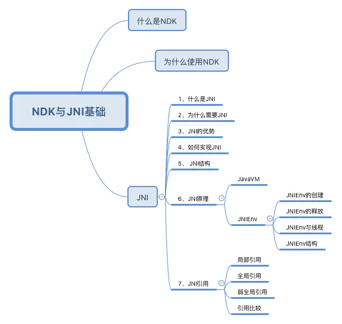
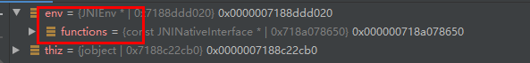
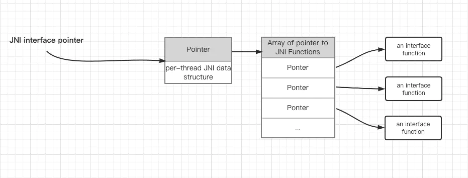
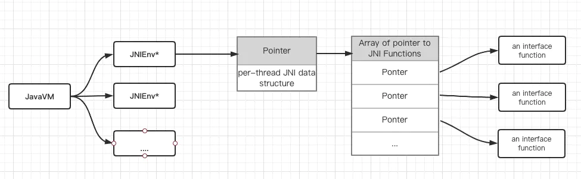
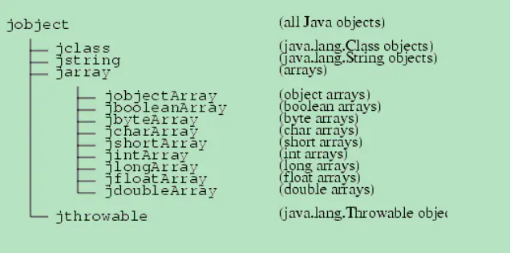

1. 目录
2. JNI
2.1. 0层

见： https://www.jianshu.com/p/87ce6f565d37
2.2. JNIEnv结构
JNIEnv: JNI的第一个参数，JNIEnv 的本质是一个与线程相关的结构体，里面存放了大量的 JNI 函数指针：是functions的集合 JNIEnv与线程一一对应


--->所以，JNIEnv的作用：通过这个 JNIEnv* 指针，就可以对 Java 端的代码进行操作：
调用 Java 函数
操作 Java 对象
struct _JNIEnv { /** * 定义了很多的函数指针 **/ const struct JNINativeInterface* functions; #if defined(__cplusplus) /// 通过类的名称(类的全名，这时候包名不是用.号，而是用/来区分的)来获取jclass jclass FindClass(const char* name) { return functions->FindClass(this, name); } //通过 jmethodID FromReflectedMethod(jobject method) { return functions->FromReflectedMethod(this, method); } jfieldID FromReflectedField(jobject field) { return functions->FromReflectedField(this, field); } jobject ToReflectedMethod(jclass cls, jmethodID methodID, jboolean isStatic) { return functions->ToReflectedMethod(this, cls, methodID, isStatic); } jclass GetSuperclass(jclass clazz) { return functions->GetSuperclass(this, clazz); } ... }
2.3. JavaVM
JavaVM : JavaVM 是 Java虚拟机在 JNI 层的代表, JNI 全局只有一个
JNIEnv : JavaVM 在线程中的代表, 每个线程都有一个, JNI 中可能有很多个 JNIEnv，同时 JNIEnv 具有线程相关性，也就是 B 线程无法使用 A 线程的 JNIEnv
JVM 的结构图如下：注意：JNIEnv与线程一一对应

2.4. jobject thiz
java对象中的This，比如MainActivity的对象
2.5. JNI基础
2.5.1. 数据类型对应表
------>作用在于：接口处参数用法，java--->cpp，例如int[] array --->jintArray
//java
public native int setToNativeArray(int[] array);
//jin.cpp
Java_com_example_NativeDemo_MainActivity_setToNativeArray(JNIEnv *env, jobject thiz, jintArray jintArrs) {
// TODO: implement setToNativeArray()
}
基础数据类型
| Java Type | Native Type | Description |
|---|---|---|
| boolean | jboolean | unsigned 8 bits |
| byte | jbyte | signed 8 bits |
| char | jchar | unsigned 16 bits |
| short | jshort | signed 16 bits |
| int | jint | signed 32 bits |
| long | jlong | signed 64 bits |
| float | jfloat | 32 bits |
| double | jdouble | 64 bits |
| void | void | N/A |
引用类型

2.5.2. JNI的命名规则
extern "C"
JNIEXPORT jint JNICALL
Java_com_example_NativeDemo_MainActivity_setToNativeArray(JNIEnv *env, jobject thiz, jintArray jintArrs) {
// TODO: implement setToNativeArray()
return 0;
}
jint是返回值类型 Java_com_example_NativeDemo 是包名 MainActivity 是类名 setToNativeArray是方法名
2.5.3. Field and Method IDs
2.6. JNI 操作 java 对象
2.6.1. 操作 jarray
将一个 Java int[] 对象传入 C++